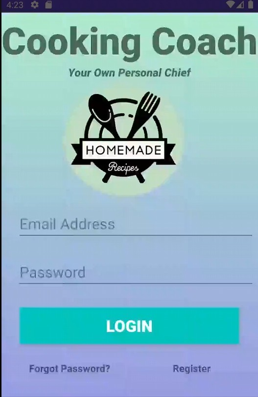
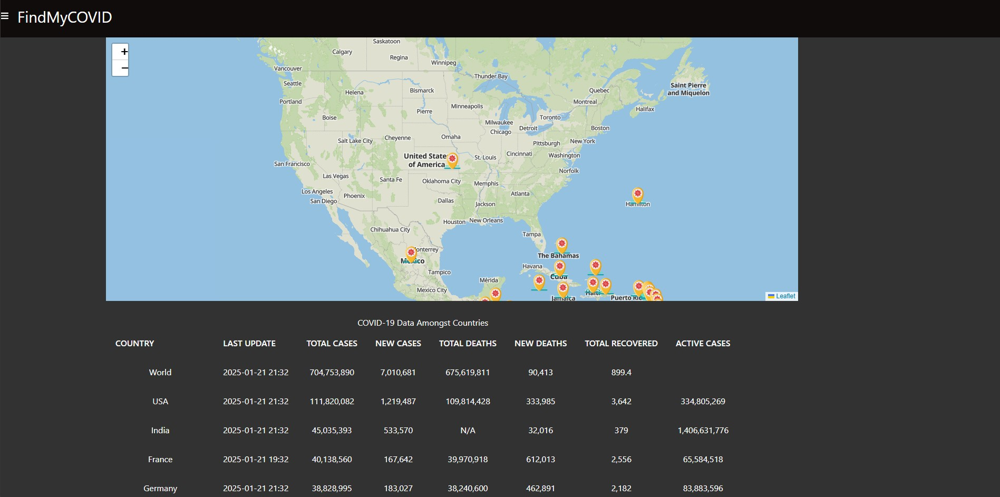
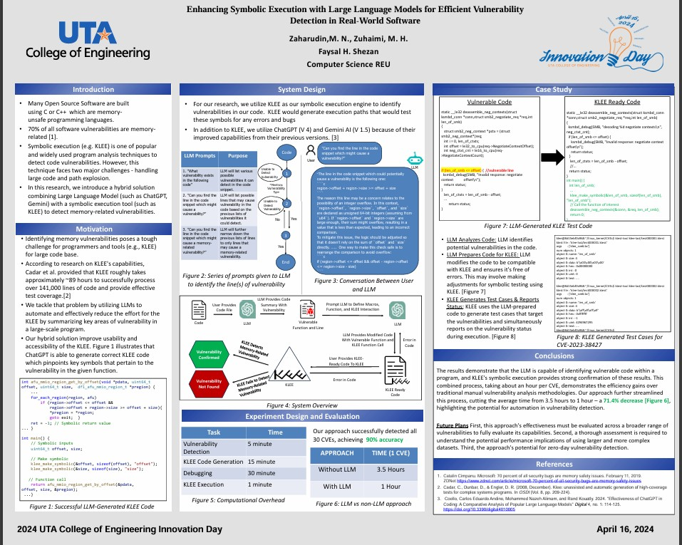

I am a software analyst and AI evaluation contributor with experience spanning production support, workflow automation, system monitoring, prompt design, and technical research. My work centers on diagnosing issues quickly, stabilizing business-critical processes, translating messy operational problems into practical fixes, and partnering across teams to improve reliability, reporting, and delivery. I bring a consulting-adjacent mindset to technical work: structured analysis, clear communication, and hands-on execution with tools such as Python, SQL, JavaScript, Splunk, Jira, and Bash.
Attended Ranchview High School
Attended the University of Texas at Arlington
Pursued a Bachelor of Science in Computer Science
Relevant coursework: Software Project Management, Software Testing, Network Organization, Database System & File Structures
Engineering Dean's List: 2021 Spring, 2021 Fall, 2022 Spring, 2024 Spring
Teso Life, Carrollton
Strengthened customer-facing communication and day-to-day operational support in a fast-paced retail environment.
Improved sales productivity by 10% through effective multitasking, ownership of floor operations, and consistent execution.
Increased product visibility and sales potential by 25% through layout analysis and display redesign.
University of Texas at Arlington
Integrated LLMs into symbolic execution workflows to improve the speed and quality of vulnerability analysis.
Reduced runtime by 71.43% and analyzed 50+ CVEs to identify memory-related vulnerability patterns.
Built automation around KLEE and targeted LLM workflows, strengthening repeatability, research throughput, and analysis accuracy.
Outlier AI
Designed Python-based prompts and training datasets to improve LLM reasoning quality, response reliability, and code-generation performance.
Supported AI evaluation efforts by refining model behavior, stress-testing outputs, and aligning responses to technical quality expectations.
Developed validation test cases for AI-generated code, improving consistency across evaluation and training workflows.
Paycom
Resolved 500+ Jira tickets spanning urgent data fixes, production issues, and payroll-impacting support requests, with a focus on fast root-cause analysis and dependable execution.
Led large-scale data remediation and database cleanup efforts that removed 1.5 million redundant records and improved system performance.
Partnered with Site Reliability Engineers to monitor production environments, build Splunk dashboards, and implement alerting workflows that surfaced anomalies faster.
Automated recurring operational work with PHP and Bash scripting, reducing manual workload by 93.33% while improving log analysis accuracy and turnaround time.
Participated in nightly on-call and critical incident support, communicating clearly across teams to maintain business continuity during high-impact issues.

As part of a 4-person Agile team, I developed an Android recipe recommendation app using Java and Firebase. This app suggests dishes to users based on the ingredients they have available. I actively contributed to the front-end UI design and implemented interactive graphs and charts using Chart.js to visually represent macronutrient breakdowns and other dietary information. I successfully overcame challenges to ensure seamless display of these visualizations across various devices.

I designed and developed an interactive web application to visualize real-time global COVID-19 data. This application integrated the Leaflet API and a COVID-19 API to create a dynamic map that displays real-time pandemic statistics at the country level.

I implemented Large Language Models (LLMs) to significantly enhance the efficiency of zero-day vulnerability detection using symbolic execution tools. This integration resulted in a 71.43% reduction in runtime. Furthermore, I analyzed over 50 documented CVEs to identify patterns in memory-related vulnerabilities, deepening my understanding of system security. To streamline the interaction between KLEE and the targeted LLMs, I developed automation scripts. This optimization significantly reduced manual effort by 71.43%, leading to a substantial increase in the accuracy and speed of research analysis.